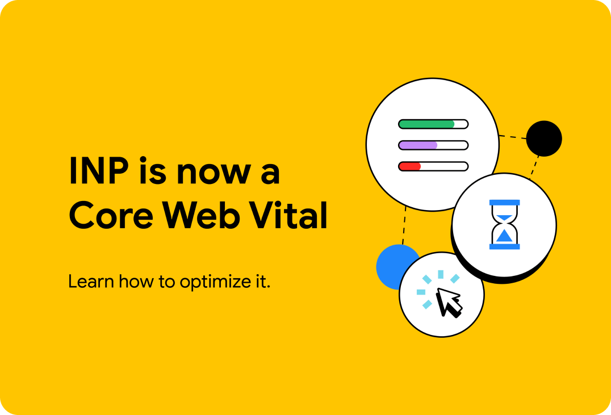
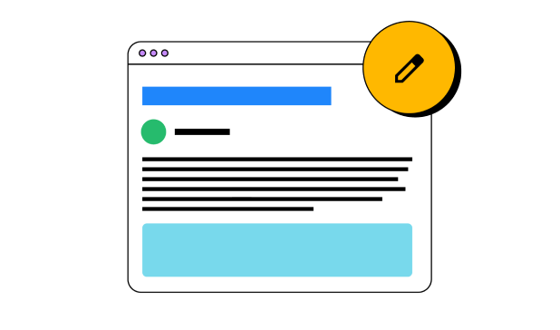

We want to help you build beautiful, accessible, fast, and secure
websites that work cross-browser, and for all of your users. This site
is our home for content to help you on that journey, written by
members of the Chrome team, and external experts who specialize in web
development topics such as accessibility, performance, design, and
more.
Web Platform Baseline brings clarity to information about browser
support for web platform features, providing clear information about
which web platform features are ready to use in your projects today.
When reading an article here on web.dev, if the features used are all
part of Baseline, you can trust the level of browser compatibility.
AI and the web
Discover resources created to help you understand and build
performant, web-first experiences with AI.

Optimize INP
Interaction to Next Paint (INP) is now a Core Web Vital metrics. Start
measuring and optimizing your site's INP.
Payments & Identity
Read up on the latest features and best practices when it comes to
identity and payment processing.
Explore the web platform
The web platform is a constantly evolving ecosystem of browser features
and APIs that developers can use to make websites that are easy and
delightful to use. These pages are pathways for you to dive into each
part of the web platform on web.dev—at your pace:
HTML
HTML is the document layer of the web, providing structure and
semantics for pages.
CSS
CSS is the presentation layer of the web, and allows you to your web
pages look just like you want them to.
Javascript
avaScript provides rich interactivity to web pages, allowing
developers to build richly interactive websites that help users to
perform tasks and accomplish goals.
Learn the web platform
New to the web platform? We've got you covered! Dive into each part of
the web platform with these courses curated specifically for beginners
to HTML, CSS, and JavaScript.
course
Learn HTML
Discover resources created to help you understand and build
performant, web-first experiences with AI.
course
Learn CSS
Interaction to Next Paint (INP) is now a Core Web Vital metrics.
Start measuring and optimizing your site's INP.
course
Learn JavaScript
Read up on the latest features and best practices when it comes to
identity and payment processing.
Our blog contains the latest news in web development, including new
web platform features, updates to Baseline, AI, Core Web Vitals, and
more. Keep up with the latest blog reading our blog.

CSS and UI design
Learn the latest tips and techniques to use in your work, right now.
Adapting typography to user preference using CSS
Adapt a font to your users' preferences, so they're maximally
comfortable reading your content.
What are source maps?
Improve web debugging experience with source maps.
TransformStream is now supported cross browser.
Now that transform streams are supported in Safari, Firefox, and
Chrome they are finally ready for prime time.
Project Fugu API showcase
On the Chrome Developers site, explore capabilities APIs.
Core Web Vitals
Build faster websites and apps by understanding Core Web Vitals and
other metrics.
The most effective ways to improve Core Web Vitals
A collection of best practices for optimizing websites' Core Web
Vitals performance based on the state of the web.
Common misconceptions about how to optimize LCP
Explore common misconceptions about optimizing Largest Contentful
Paint by looking beyond image optimization and considering factors
like Time to First Byte and resource load delay.
TransformStream is now supported cross browser.
Now that transform streams are supported in Safari, Firefox, and
Chrome they are finally ready for prime time.
Project Fugu API showcase
On the Chrome Developers site, explore capabilities APIs.
Progressive Web Apps
Create capable web experiences.
Adapting typography to user preference using CSS
Adapt a font to your users' preferences, so they're maximally
comfortable reading your content.
What are source maps?
Improve web debugging experience with source maps.
TransformStream is now supported cross browser.
Now that transform streams are supported in Safari, Firefox, and
Chrome they are finally ready for prime time.
Project Fugu API showcase
On the Chrome Developers site, explore capabilities APIs.
Developer Newsletter
Get the latest news, techniques, and updates straight to your inbox.


.png)
.png)